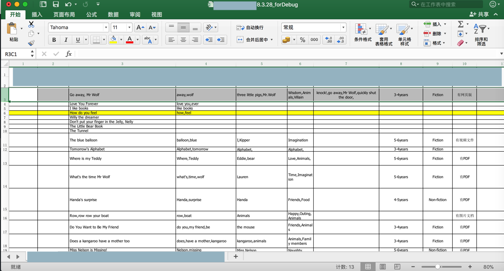
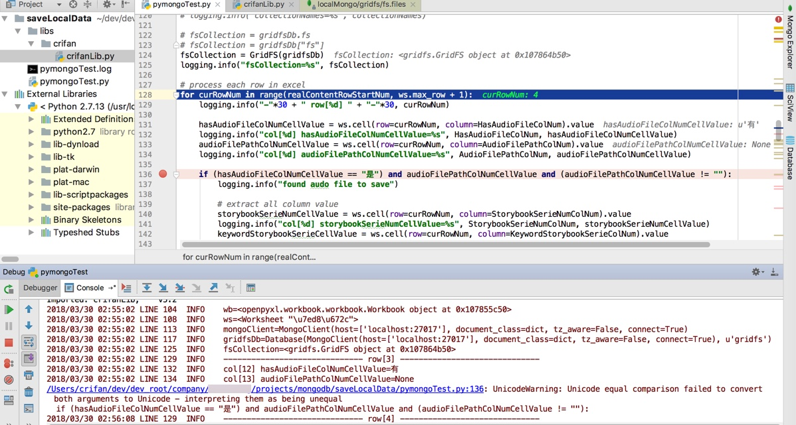
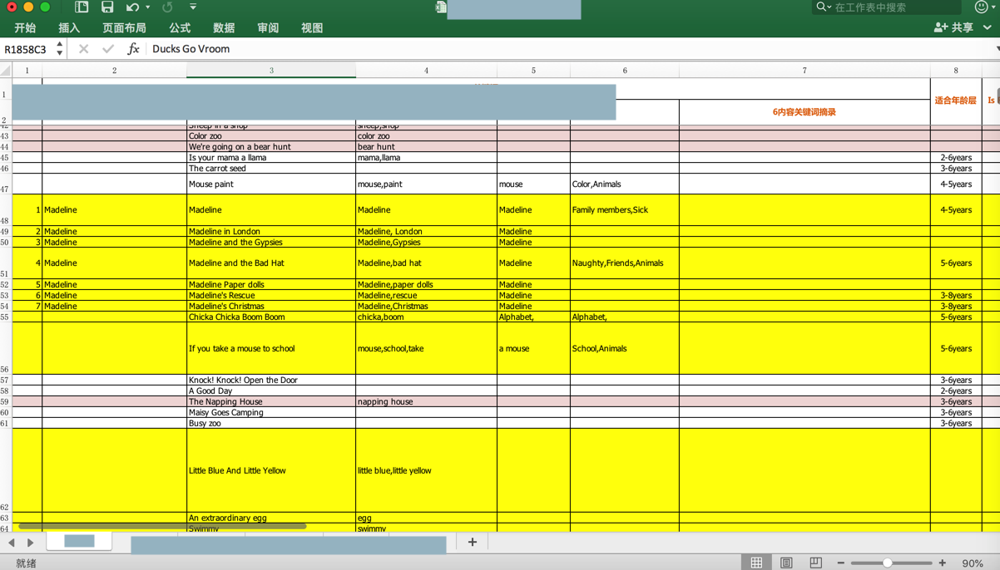
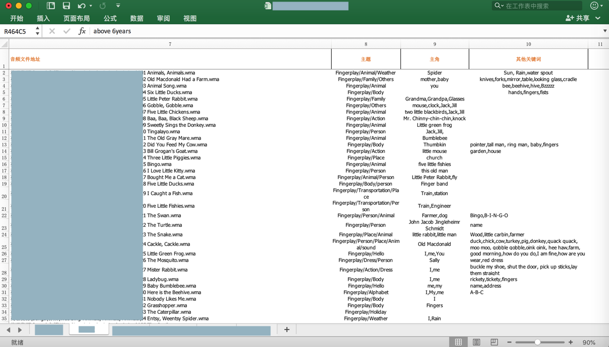
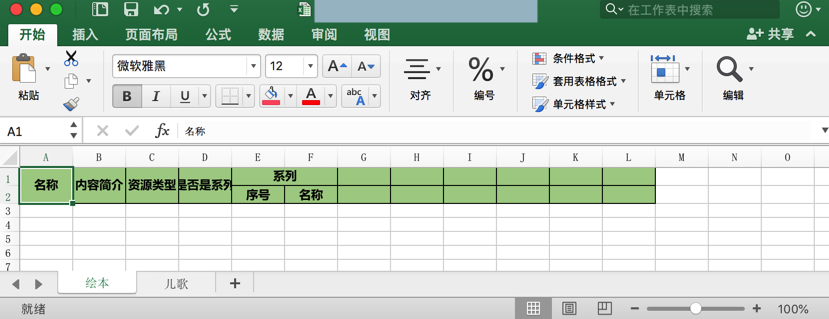
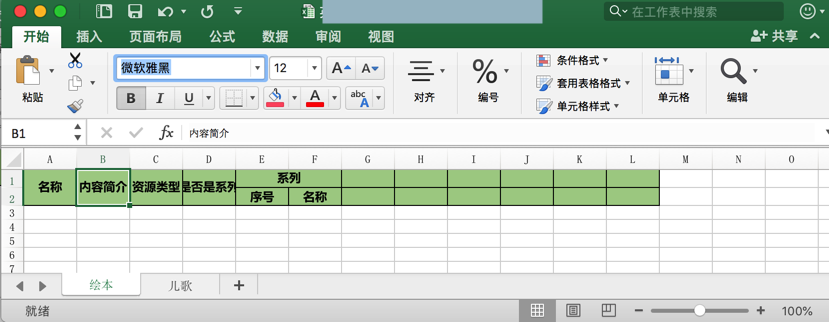

举例
此处列出一些用openpyxl操作excel的实际的例子，供参考。
用openpyxl读取excel文件
对于excel文件：

代码：
from openpyxl import Workbook, load_workbook
StorybookSheetTitle = u"绘本"
EnglishStorybookRootPath = "/Users/crifan/dev/dev_root/xxx"
ExcelFilename = "xxx资源2018.3.28_forDebug.xlsx"
ExcelFullFilename = os.path.join(EnglishStorybookRootPath, ExcelFilename)
AudioFilePathPrefix = EnglishStorybookRootPath
# parse excel file
wb = load_workbook(ExcelFullFilename) # work book
logging.info("wb=%s", wb)
# sheetNameList = wb.get_sheet_names()
# logging.info("sheetNameList=%s", sheetNameList)
ws = wb[StorybookSheetTitle] # work sheet
logging.info("ws=%s", ws)
# process each row in excel
for curRowNum in range(realContentRowStartNum, ws.max_row + 1):
logging.info("-"*30 + " row[%d] " + "-"*30, curRowNum)
hasAudioFileColNumCellValue = ws.cell(row=curRowNum, column=HasAudioFileColNum).value
logging.info("col[%d] hasAudioFileColNumCellValue=%s", HasAudioFileColNum, hasAudioFileColNumCellValue)
audioFilePathColNumCellValue = ws.cell(row=curRowNum, column=AudioFilePathColNum).value
logging.info("col[%d] audioFilePathColNumCellValue=%s", AudioFilePathColNum, audioFilePathColNumCellValue)
输出：
2018/03/30 02:55:02 LINE 104 INFO wb=<openpyxl.workbook.workbook.Workbook object at 0x107855c50>
2018/03/30 02:55:02 LINE 108 INFO ws=<Worksheet "\u7ed8\u672c">
2018/03/30 02:55:02 LINE 113 INFO mongoClient=MongoClient(host=[‘localhost:27017’], document_class=dict, tz_aware=False, connect=True)
2018/03/30 02:55:02 LINE 117 INFO gridfsDb=Database(MongoClient(host=[‘localhost:27017′], document_class=dict, tz_aware=False, connect=True), u’gridfs’)
2018/03/30 02:55:02 LINE 125 INFO fsCollection=<gridfs.GridFS object at 0x107864b50>
2018/03/30 02:55:02 LINE 129 INFO —————————— row[3] ——————————
2018/03/30 02:55:02 LINE 132 INFO col[12] hasAudioFileColNumCellValue=有
2018/03/30 02:55:02 LINE 134 INFO col[13] audioFilePathColNumCellValue=None
（用PyCharm）调试输出的效果：

新建excel文件并保存数据和设置单元格样式
背景：希望新建这种效果的excel
并且创建对应的第一行和第二行的表头，且部分单元格是合并的
然后再一点点把之前已有的excel中的内容：


保存进来。
代码：
from openpyxl import Workbook, load_workbook
from openpyxl.styles import Alignment
from openpyxl.styles import PatternFill, colors, Color
from openpyxl.styles import NamedStyle, Font, Border, Side
# create new output unified format excel file
wbOut = Workbook()
logging.info("wbOut=%s", wbOut)
# wsStorybook = wbOut.create_sheet(StorybookSheetTitle)
wsStorybook = wbOut.active
wsStorybook.title = StorybookSheetTitle
wsSong = wbOut.create_sheet(SongSheetTitle)
logging.info("wsStorybook=%s, wsSong=%s", wsStorybook, wsSong)
# common style
alignmentCenter = Alignment(horizontal='center', vertical='center')
fontYahei12 = Font(name=u'微软雅黑', bold=True, size=12)
thinSide = Side(style='thin', color=colors.BLACK)
allBlackThinBorder = Border(left=thinSide, top=thinSide, right=thinSide, bottom=thinSide)
# several type of headers style
NamedStyleCommonHeader = "CommonHeader"
NamedStyleStorybookHeader = "StorybookHeader"
NamedStyleSongHeader = "SongHeader"
NamedStyleFileHeader = "FileHeader"
commonBkgColorHex = "AACF91"
commonFill = PatternFill(start_color=commonBkgColorHex, end_color=commonBkgColorHex, fill_type="solid")
...
commonStyleHeader = NamedStyle(name=NamedStyleCommonHeader)
commonStyleHeader.font = fontYahei12
commonStyleHeader.border = allBlackThinBorder
commonStyleHeader.alignment = alignmentCenter
commonStyleHeader.fill = commonFill
wbOut.add_named_style(commonStyleHeader)
...
# init headers
def initOutputExcelHeaders(ws):
logging.info("ws=%s", ws)
nameCell = ws["A1"]
nameCell.value = "名称"
ws.merge_cells('A1:A2')
contentAbstractCell = ws["B1"]
contentAbstractCell.value = "内容简介"
ws.merge_cells('B1:B2')
resTypeCell = ws["C1"]
resTypeCell.value = "资源类型"
ws.merge_cells('C1:C2')
isSeriesCell = ws["D1"]
isSeriesCell.value = "是否是系列"
ws.merge_cells('D1:D2')
seriesCell = ws["E1"]
seriesCell.value = "系列"
ws.merge_cells('E1:F1')
seriesNumCell = ws["E2"]
seriesNumCell.value = "序号"
seriesNameCell = ws["F2"]
seriesNameCell.value = "名称"
for eachCommonRow in ws.iter_rows("A1:L2"):
logging.info("eachCommonRow=%s", eachCommonRow)
for eachCellInRow in eachCommonRow:
logging.info("eachCellInRow=%s", eachCellInRow)
eachCellInRow.style = NamedStyleCommonHeader
initOutputExcelHeaders(wsStorybook)
initOutputExcelHeaders(wsSong)
wbOut.save(OutputUnifiedFormatExcelFilename)
效果：

确保指定的字体系统中是存在的
设置的Font确保是系统中存在的字体才可以
此处用的是Python2，系统中当前的字体名是微软雅黑
对应设置字体为雅黑的代码是
fontYahei12 = Font(name=u'微软雅黑', bold=True, size=12)
其中重点是：font的name是unicode才可以
估计内容原因是：如果name不是unicode，则name找不到，所以会报错，会导致excel打不开
此处微软雅黑字体的效果是：
